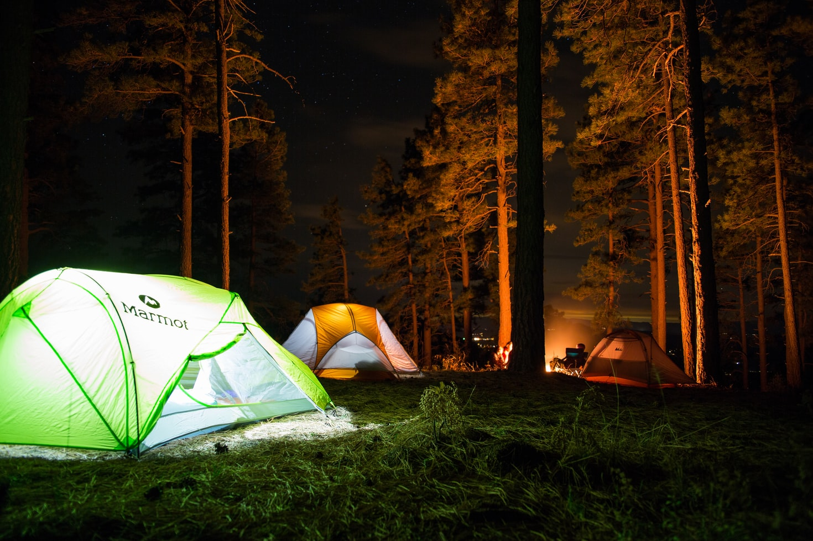
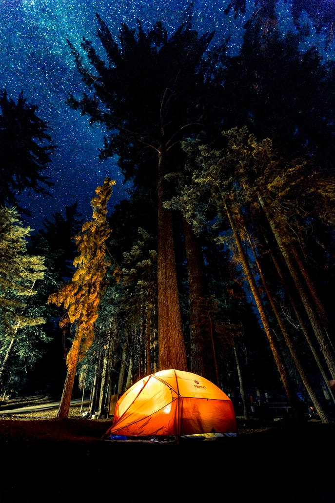
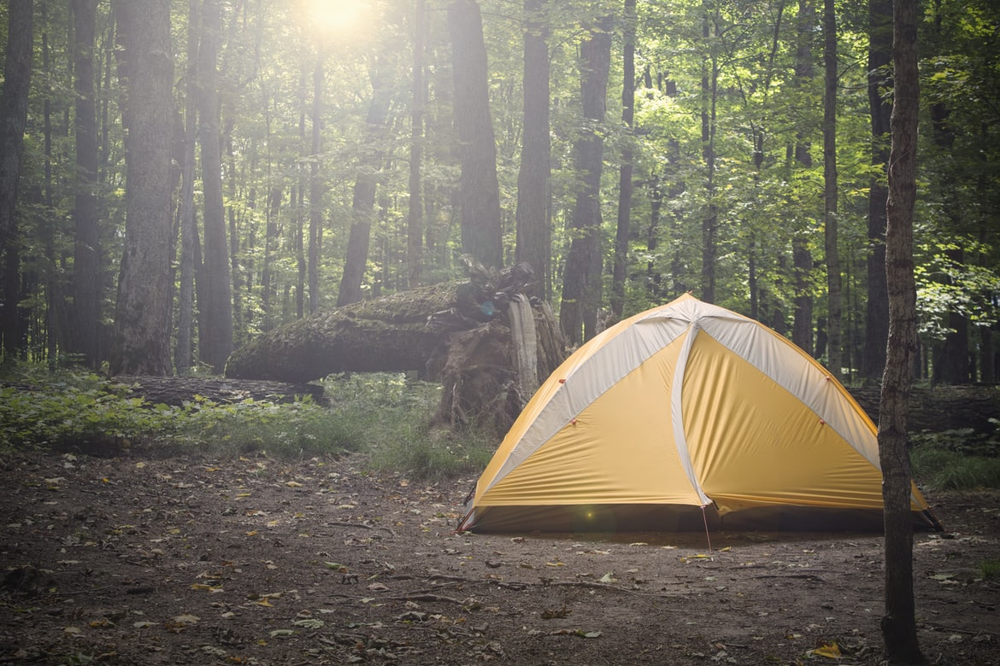

Starting off this list we have Watagans National Park in the state forest. It is located roughly 2hrs north of sydney and is just west of Newcastle, NSW, while this is a slightly smaller national park and state forest still offers some great camping locations and lookouts. The watagans is a fairly popular place for people to visit even just for a day trip as they have some lovely picnic areas such as the Pines picnic area which is usually fairly busy on long weekends so best to get there early for the day. While the roads in the state forest are accessible by 2WD cars the state forest and national park also offer some great 4WD tracks also and is pretty popular in the area for people to take their trail bikes for the weekend. As for Camping itself they have some designated campgrounds that cater for some basic amenities also but most places are fine to set up unless posted otherwise.
Belanglo state forest is a place 1.5Hrs south west of Sydney. This state forest offers some nice camping spots all around the place while being surrounded by pine trees. This location offers some nice casual strolls through the pine trees as they are all fairly evenly spaced between one another. There is a main campground inside the state forest which offers a big grassy patch amongst the large amounts of pine trees. At the campground there is also a fairly sized dam of water which you can take a dip in if it isn't too cold depending on the time of year that you decide to go. Either way no matter the season you're sure to be able to get away and get some great pictures amongst the pine trees there.
Newnes is a plateau region west of sydney over the Blue Mountains, it takes roughly around 3hrs from Sydney Newns is a fairly large area in terms of places you can go. It offers a wide range of 4WD tracks and Trail bike tracks also making a quite a popular place to go for a weekend of 4WDing it is also surrounded by some smaller state forests nearby making it very easy and convenient to go exploring for the day and get lost down some track with your friends. Even though this location can have a lot of traffic on busy weekends. You can find some really nice spots tucked away in the middle of the bush totally away from everyone so long as you are willing to go looking for it of course. Newnes offers a wide variety of thing for you to do over the course of your stay here and there are many places to go exploring and see what you find or just find a relatively quiet spot and do nothing but wave at some bikes passing by it is a great location to spend a weekend away.
Jenolan is roughly 3hrs west of sydney over the Blue Mountains. This location is quite popular as it offers weekend goers some great pictures of the waters and caves in that area. The main campgrounds is just north of the Jenolan caves so with a short drive from the campground you can find yourself at the caves. once you are at the caves you can take a short bush walk to the stunning Blue Lake there which will give you some great pictures to take home.there are also some notable locations nearby such as the Mt. Inspiration lookout, Orient cave and not too far of a drive away the Glow worm tunnels which is pretty spectacular to see.
Stockton Beach is a little over 2 Hrs north of Sydney. At this beach you are allowed to camp down on the southern end of the beach which has been designated for people to camp by their cars. At this beach you can spend your day driving up and down the sand dunes but be careful as it can be easy to get stuck so best take someone else along with you so you are able to get back out. Another activity you can enjoy is fishing from the beach if that's something you would like to do. If you drive further up the beach you can find an old shipwreck the MV sygna that ran aground on the beach and hasn't moved since. This beach can be a great place to go if you want to get away and have a change of pace instead of camping in the bush Why not close to the water? Having the sound of crashing waves as you lay down in your tent is a great way to get off to sleep.